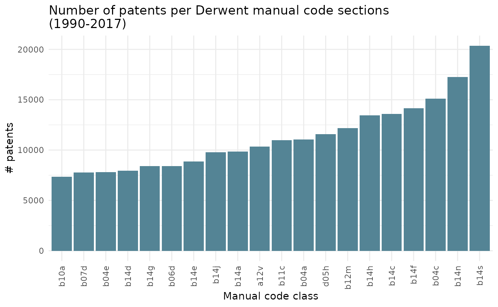
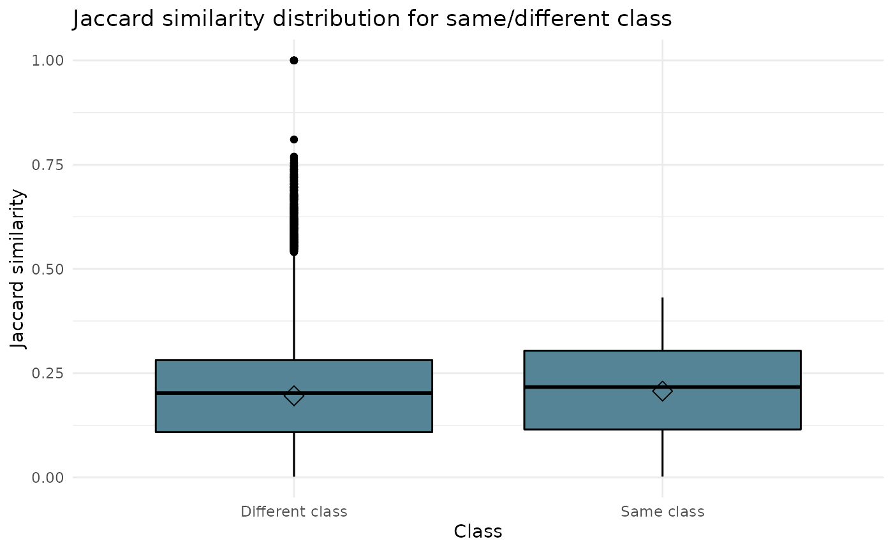
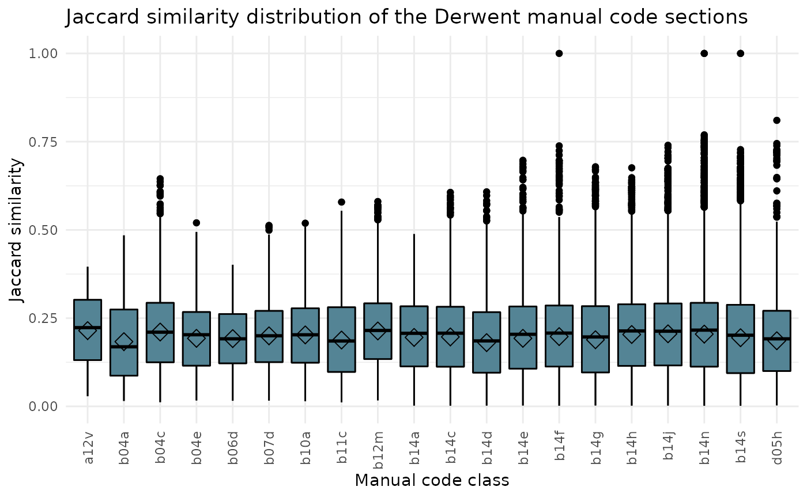

Vignette.RmdThe dataset is about innovation dynamics in the pharmaceutical industry in China. Innovation dynamics is interpreted as knowledge transfer across technologies and through time (velocity). The dataset provides access to 143,916 Jaccard similarity indices. They proxy relatedness across technologies (classes) and through time (velocity). They are the result of a Natural Language Processing treatment of 69,923 patents in the pharmaceutical industry in China from 1990 to 2017.
| Variable name | Description |
|---|---|
| name_i | Corresponds to class_i + year_i containing all patents of this group and year in the dataset |
| class_i | Manual code section for patent group i |
| year_i | Year of patent filing |
| vol_i | Number of patents in the group (name_i) |
| name_j | Corresponds to class_j + year_j containing all patents of this group and year in the dataset |
| class_j | Manual code section for patent group j |
| year_j | Year of patent filing for group j |
| vol_j | Number of patents in the group (name_j) |
| year_diff | The difference in years between year_i and year_j of patent filing |
| vol_diff | Difference in the amount of patents filed in each class for a respective year (difference vol_i and vol_j) |
| Jaccard_Similarity | Similarity between patent class i and patent class j and their respective years |
| Manual code sections | Category | Sub-category |
|---|---|---|
| B14-N | Pharmaceutical activities | Organs |
| D05-H | Fermentation industry | Microbiology, laboratory procedures |
| B04-A | Natural products (or genetically engineered), polymers | Alkaloids, plant extracts |
| B14-S | Pharmaceutical activities | Miscellaneous activity terms |
| B14-F | Pharmaceutical activities | Drugs acting on the blood and cardiovascular system |
| B04-C | Natural products (or genetically engineered), polymers | Polymers |
| B14-C | Pharmaceutical activities | Anaesthetics and drugs relieving fever, inflammation and pain |
| B04-E | Natural products (or genetically engineered), polymers | Nucleic acids |
| B12-M | Diagnostics and formulation types | Formulations type |
| B14-J | Pharmaceutical activities | Drugs acting on the muscular and nervous systems |
| B14-H | Pharmaceutical activities | Cancer related drugs |
| B11-C | Process, apparatus | General process, apparatus |
| B14-A | Pharmaceutical activities | Antimicobials |
| B14-E | Pharmaceutical activities | Drugs acting on the gastrointestinal system |
| B10-A | Aromatics and cycloaliphatics (mono and bicyclic only), aliphatics | Rarer chemical groups general |
| B14-G | Pharmaceutical activities | Drugs acting on the immune system |
| B14-D | Pharmaceutical activities | Hormonal, antihormonal, enzyme inhibitors |
| A12-V | Polymer applications | Medical, dental, cosmetics and veterinary |
| B07-D | Heterocyclics, mononuclear | Sole hetero(s) nitrogen |
| B06-D | Heterocyclic fused ring | Sole hetero(s) nitrogen |
You can install ipcR from GitHub with:
# install.packages("devtools")
devtools::install_github("warint/innovation_pharma_china")You can also download the date here
ipcr_data() allows you to retrieve dataset providing access to 143,916 Jaccard similarity indices.
myData <- ipcr_data()The ipcr_visual() function allows you to create three types of visual : line, point and box charts.
The line_1 argument creates a line chart on the evolution of technologies (classes) through time.
All classes are included in this visual. Therefore, argument class does not need to be filled in.
ipcr_visual(chart = "line_1")
The line_2 argument creates a line chart on the evolution of a chosen class through time.
You can refer to the table (top 20 manual code sections) above to find all the classes.
ipcr_visual(chart = "line_2",class = "a12v")
The bar_1 argument create a bar chart on the sum of all patents for each class, in any given year.
All classes are included in this visual. Therefore, argument class does not need to be filled in.
ipcr_visual(chart = "bar_1")
The box_1 argument create a box chart on the Jaccard similarity distribution for same or different class
All classes are included in this visual. Therefore, argument class does not need to be filled in.
ipcr_visual(chart = "box_1")
The box_1 argument create a box chart on the Jaccard similarity distribution of the Derwent manual code sections.
All classes are included in this visual. Therefore, argument class does not need to be filled in.
ipcr_visual(chart = "box_2")